WBS boards in KiCad
63 boards converted from the original Tango-PCB and Eagle files. Click a render for its notes; open the .kicad_pcb in KiCad 9.
 14-060 - AP94005tango · 97 parts.kicad_pcb
14-060 - AP94005tango · 97 parts.kicad_pcb 14-265 - AP93001tango · 153 parts.kicad_pcb
14-265 - AP93001tango · 153 parts.kicad_pcb 14-265 - M8204tango · 469 parts.kicad_pcb
14-265 - M8204tango · 469 parts.kicad_pcb 14-266 - AP93001tango · 122 parts.kicad_pcb
14-266 - AP93001tango · 122 parts.kicad_pcb 14-268 - AP93001tango · 11 parts.kicad_pcb
14-268 - AP93001tango · 11 parts.kicad_pcb 14-273 - SA14-273 10X1 STEREO SELECTOR ASSEMBLYtango · 273 parts.kicad_pcb
14-273 - SA14-273 10X1 STEREO SELECTOR ASSEMBLYtango · 273 parts.kicad_pcb 14-273A - AP93001tango · 270 parts.kicad_pcb
14-273A - AP93001tango · 270 parts.kicad_pcb 14-277 - SA14-277tango · 110 parts.kicad_pcb
14-277 - SA14-277tango · 110 parts.kicad_pcb 14-277B - SA14-277tango · 60 parts.kicad_pcb
14-277B - SA14-277tango · 60 parts.kicad_pcb 14-279 - SA14-279tango · 590 parts.kicad_pcb
14-279 - SA14-279tango · 590 parts.kicad_pcb 14-280 - SA14-280 INPUT AMPLIFIER ASSEMBLYtango · 103 parts.kicad_pcb
14-280 - SA14-280 INPUT AMPLIFIER ASSEMBLYtango · 103 parts.kicad_pcb 14-280A - SA14-280tango · 107 parts.kicad_pcb
14-280A - SA14-280tango · 107 parts.kicad_pcb 14-283 - AP93001tango · 39 parts.kicad_pcb
14-283 - AP93001tango · 39 parts.kicad_pcb 14-284 - SA14-284tango · 329 parts.kicad_pcb
14-284 - SA14-284tango · 329 parts.kicad_pcb 14-285 - SA14-285tango · 9 parts.kicad_pcb
14-285 - SA14-285tango · 9 parts.kicad_pcb 14-286 - SA14-286tango · 9 parts.kicad_pcb
14-286 - SA14-286tango · 9 parts.kicad_pcb 14-290tango · 258 parts.kicad_pcb
14-290tango · 258 parts.kicad_pcb 14-290Atango · 168 parts.kicad_pcb
14-290Atango · 168 parts.kicad_pcb 14-290A - AP94005tango · 167 parts.kicad_pcb
14-290A - AP94005tango · 167 parts.kicad_pcb 14-291A - M718Atango · 62 parts.kicad_pcb
14-291A - M718Atango · 62 parts.kicad_pcb 14-293NW - AP93001tango · 255 parts.kicad_pcb
14-293NW - AP93001tango · 255 parts.kicad_pcb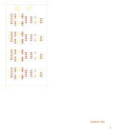
14-295tango · 59 parts.kicad_pcb 14-295 - SA14-295tango · 192 parts.kicad_pcb
14-295 - SA14-295tango · 192 parts.kicad_pcb 14-300 - SA14-300 CONTROL ASSEMBLYtango · 571 parts.kicad_pcb
14-300 - SA14-300 CONTROL ASSEMBLYtango · 571 parts.kicad_pcb 14-301 - SA14-301tango · 33 parts.kicad_pcb
14-301 - SA14-301tango · 33 parts.kicad_pcb 14-302 - IKR-10A INTERCOM KEY CONTROL & AUDIO FUNCTIONALtango · 257 parts.kicad_pcb
14-302 - IKR-10A INTERCOM KEY CONTROL & AUDIO FUNCTIONALtango · 257 parts.kicad_pcb 14-306 - POD4 DUAL MICROPHONE PRAMPLIFIERtango · 201 parts.kicad_pcb
14-306 - POD4 DUAL MICROPHONE PRAMPLIFIERtango · 201 parts.kicad_pcb 14-316 - POD 7 - CONTROL ROOM INTERFACEtango · 119 parts · nets.kicad_pcb
14-316 - POD 7 - CONTROL ROOM INTERFACEtango · 119 parts · nets.kicad_pcb 14-317 - 10 WATT POWER AMPLIFIERtango · 82 parts · nets.kicad_pcb
14-317 - 10 WATT POWER AMPLIFIERtango · 82 parts · nets.kicad_pcb 14-318tango · 276 parts.kicad_pcb
14-318tango · 276 parts.kicad_pcb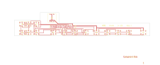
14-320tango · 39 parts.kicad_pcb 14-321 - SA14-321A BIPOLAR DC TO DC CONVERTORtango · 41 parts · nets.kicad_pcb
14-321 - SA14-321A BIPOLAR DC TO DC CONVERTORtango · 41 parts · nets.kicad_pcb 14-321A - SA14-321A BIPOLAR DC TO DC CONVERTORtango · 36 parts · nets.kicad_pcb
14-321A - SA14-321A BIPOLAR DC TO DC CONVERTORtango · 36 parts · nets.kicad_pcb 14-322tango · 7 parts.kicad_pcb
14-322tango · 7 parts.kicad_pcb 14-323tango · 191 parts · nets.kicad_pcb
14-323tango · 191 parts · nets.kicad_pcb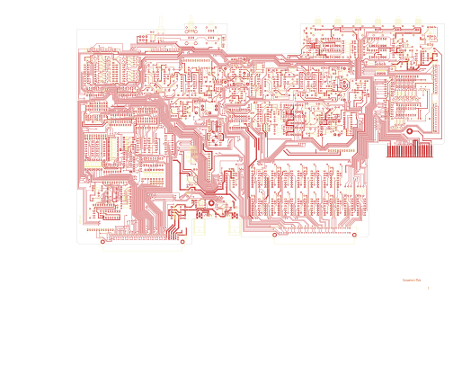
14-325tango · 664 parts.kicad_pcb 14-325 - M921tango · 663 parts.kicad_pcb
14-325 - M921tango · 663 parts.kicad_pcb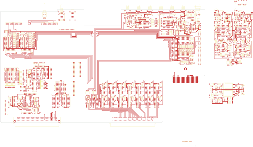
14-325Atango · 551 parts.kicad_pcb 14-326 - SA14-326 STEREO LINE PREAMPLIFIERtango · 8 parts.kicad_pcb
14-326 - SA14-326 STEREO LINE PREAMPLIFIERtango · 8 parts.kicad_pcb 14-326 - SA14-326 STEREO LINE PREAMPLIFIER+tango · 229 parts.kicad_pcb
14-326 - SA14-326 STEREO LINE PREAMPLIFIER+tango · 229 parts.kicad_pcb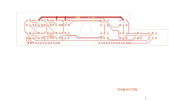
14-327tango · 40 parts.kicad_pcb- 14-328tango · 29 parts.kicad_pcb
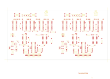
14-329tango · 146 parts.kicad_pcb 14-330tango · 510 parts.kicad_pcb
14-330tango · 510 parts.kicad_pcb
14-332tango · 7 parts.kicad_pcb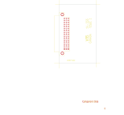
14-333tango · 7 parts.kicad_pcb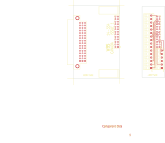
14-334tango · 15 parts.kicad_pcb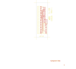
14-335tango · 9 parts.kicad_pcb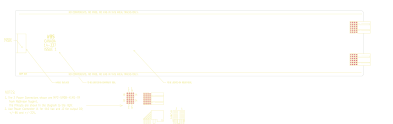
14-337tango · 4 parts.kicad_pcb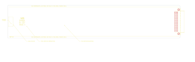
14-337Atango · 2 parts.kicad_pcb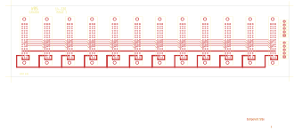
14330OLDtango · 34 parts.kicad_pcb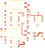
HELPtango · 33 parts.kicad_pcb M150 - M150tango · 51 parts.kicad_pcb
M150 - M150tango · 51 parts.kicad_pcb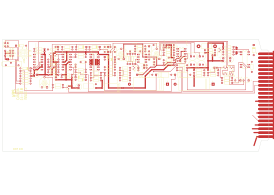
M701Dtango · 159 parts.kicad_pcb M702Dtango · 123 parts.kicad_pcb
M702Dtango · 123 parts.kicad_pcb M8205W - M8204tango · 170 parts.kicad_pcb
M8205W - M8204tango · 170 parts.kicad_pcb M920-1 - M920tango · 564 parts.kicad_pcb
M920-1 - M920tango · 564 parts.kicad_pcb M920-2 - M920tango · 177 parts.kicad_pcb
M920-2 - M920tango · 177 parts.kicad_pcb M920TMP - M920tango · 75 parts.kicad_pcb
M920TMP - M920tango · 75 parts.kicad_pcb M920WORK - M920tango · 717 parts.kicad_pcb
M920WORK - M920tango · 717 parts.kicad_pcb M920WRK - M920tango · 189 parts.kicad_pcb
M920WRK - M920tango · 189 parts.kicad_pcb M926-1 - M926tango · 103 parts.kicad_pcb
M926-1 - M926tango · 103 parts.kicad_pcb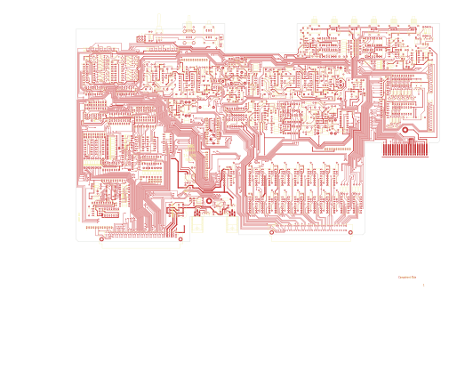
NEW325tango · 663 parts.kicad_pcb
Not converted
- 14-2688 - AP93001: P-CAD 2002 binary: KiCad imports only P-CAD ASCII
- 14-268pcad - AP93001: P-CAD 2002 binary: KiCad imports only P-CAD ASCII
- WBS-RTO-144-REV 10 - RTO-144: Eagle import needs KiCad's layer-mapping dialog: open it in KiCad with File > Import > Non-KiCad Board File